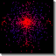

|  |
Particle Swarm Optimization
Version 1 by: Joey Harrison and Ankur Desai
Version 2 by: Nik Swoboda
|
Particle Swarm Optimization (PSO) is a population-oriented stochastic
search technique similar to genetic algorithms and other evolutionary
computation algorithms. The technique discovers solutions for
N-dimensional parameterized problems: basically it discovers the point
in N-dimensional space which maximizes some fitness function.
PSO works approximately as follows: a "swarm" of candidate solutions
("particles") are placed randomly throughout the space with a random
initial velocity vector. This velocity vector affects how each particle
moves in the space, and it is changed each time step according to a
weighted sum of the following values:
- The particle's previous velocity vector.
- A vector towards the personal best location the particle
has ever visited.
- Either:
- A vector towards the global best, the best location that any
member of the swarm has ever visited.
- A vector towards the "neighborhood best": all the particles
are organized beforehand in a list. A particle's neighborhood are
himself and the M individuals on either side of him. The
neighborhood best is the best location any neighbor ever
visited.
This simulation applies PSO to a number of simple two-dimensional
problems sufficient for visualization. The model parameters are:
- Function: the function applied in the space.
"Better" return values are higher. There are several available
functions, all common to the stochastic search literature:
- Booth. (x + 2*y - 7)2 +
(2*x + y - 5)2
- Rastrigin. 20 + x2 - 10*cos(2*Pi*x)
+ y2 - 10*cos(2*Pi*y)
- Griewank. (1 + 1/4000 * (x2 + y2)
- (cos(x)*cos(y / sqrt(2)))
- Rosenbrock. (1 - x)2 +
100*(y - x2)
- NumParticles: the number of particles in the swarm.
- isGlobalBest: whether the global best particle has an
influence over all the others or whether neighborhoods are
used.
- NeighborhoodSize: when isGlobalBest is false, the size of
the particle's "neighborhood", including himself.
- MaxVelocity: this defines the range of possible velocities
for each particle (from -MaxVelocity to MaxVelocity).
- InertiaConstant:The constant which is used to scale the
previous velocity in the weighted sum.
- CognitiveConstant:The constant which is used to scale the
influence of the personal-best in the weighted sum.
- SocialConstant:The constant which is used to scale the
influence of the global- OR neighborhood-best in the weighted sum.
- SuccessThreshold: A particle must reach this close to the
global minimum (the solution) in order to be considered "optimal".
The simulation terminates when all particles are within this
threshold.
As particles move through the space they are colored in a spectrum
from Blue to Red to illustrate their distance from the global minimum.
The global minimum is shown with a small white oval.